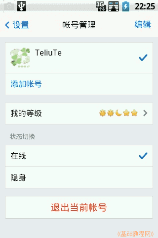
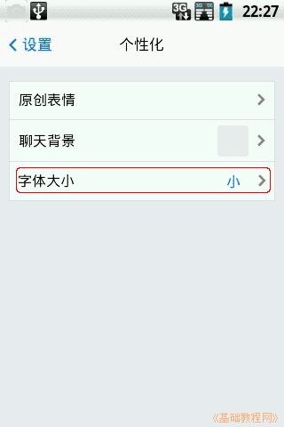

Android 安卓智能手机操作教程
作者：TeliuTe 来源：基础教程网
十八、手机QQ 返回目录 下一课本节学习在手机上使用QQ聊天；
1、手机QQ
1）在http://im.qq.com/download/mobile.shtml上下载所需的版本，内存小的手机可以选择轻聊版；
2）安装好以后，点“所有程序”按钮，程序多就到第二页去找到手机QQ，点按运行，提示在桌面创建快捷方式；
3）输入自己的QQ号和密码，点击“登录”，出来查找通讯录，点“关闭”进入程序界面；
4）下边默认是“消息”、“联系人”和“设置”三个标签，有新消息是自动显示“消息”标签页面；
5）点下边的“联系人”，显示自己的QQ好友，点上面的“群”，可以显示自己加入的群；
6）点右上角一个带加号的头像，就会进入“添加好友”界面，可以通过扫描二维码，通过QQ号等方式添加好友，下边是添加群；
2、设置手机QQ
1）返回后，再点下边的“设置”按钮，进入详细设置页面；
2）点按头像进入帐号管理，可以选择隐身状态，可以退出当前QQ号；

3）点“我的资料”，可以下载自己的QQ二维码，编辑个人资料，修改头像、昵称、个性签名等；
4）点“消息通知”可以关闭来消息提示音，设置屏蔽群消息，退出后仍接收消息；
5）在“个性化”中，可以设置显示的字体大小；

6）在“辅助功能”中，可以查看流量统计，设置手机流量2G/3G下不接收图片，查看流量统计，清空消息列表，开启QQ摇一摇截屏，设置回车键发送消息等；
7）在“安全与隐私”中，可以设置允许手机、电脑同时登录，修改密码，对附近的人可见，可以通过手机号找到；
8）在“关于”中可以查看版本，更新软件，查看帮助文档；
9）设置的最下面应该有个“退出”，但是2.0.0.173中没找到，可以在“系统设置、应用程序、正在运行的服务”里选择停止；
本节学习了手机QQ的基础知识，如果你成功地完成了练习，请继续学习下一课内容；
本教程由86团学校TeliuTe制作|著作权所有
基础教程网：http://teliute.org/
美丽的校园……
转载和引用本站内容，请保留作者和本站链接。